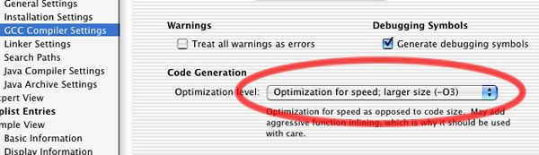

Apple's New Power Mac G5Today’s creative professionals crave exceptional processing performance and system bandwidth since the ability to crunch increasing quantities of data quickly and efficiently is crucial to their success. They need vast amounts of RAM to handle memory-intensive applications and enormous media files. They need superfast, sophisticated graphics to visualize complex 3D models and manipulate high-resolution images. And they need a comprehensive array of input and output options to connect to a myriad of industry-specific peripherals. Enter the all-new Power Mac G5 (also known as the 970), the world’s most powerful personal computer, ready to meet the high-performance, no-compromise requirements of creative professionals everywhere. This revolutionary desktop computer is the first with a 64-bit processor, the PowerPC G5, developed in collaboration with IBM and produced using their state-of-the-art process technology. And because the G5 processor runs 32-bit code natively, Mac OS X and Classic applications run natively on the Power Mac G5. Taking maximum advantage of the specific features and performance of the G5 can, however, involve some tuning and tweaking of your application. This technote will explain how to get started. And if your application doesn't have performance critical hotspots, you can still turn on a few compiler flags to gain a boost: see the G5-specific Compiler Options and Compile With General Optimizations On sections for more information.
|
|
Figure 1. Type your figure title here.. |
gcc 3.3 complies with the C and C++ specifications more closely than prior versions of gcc did. Thus, compiling your code with gcc 3.3 may indicate some lines of your code that need to be updated, often helping eliminate subtle bugs.
Step 3
The third piece you need to install is the CHUD (Computer Hardware Understanding Developer) tools -a variety of low-level hardware-centric performance tools, including Shark. The latest G5-ready version of the CHUD tools can be downloaded, and it also is a part of the Xcode Tools. Typically, the download location will have a newer version of the CHUD tools than what is available on a CD. These tools install into /Developer/Applications/CHUD/, as well as installing other system components to enable low-level performance analysis.
G5-specific Compiler Options and How To Use Them
Some compiler flags can be used with code running with all processors, because they are designed to improve runtime performance on all processors. Such flags, like -O3 with gcc in particular (accessable via a pop-up menu in Targets-> GCC Compiler Settings) should be turned on as a first step in improving the code in your application. Once that is done however, there are a few other gcc 3.3 compiler flags that you should use when tuning your code for the G5 specifically. These flags can be used on a per-target basis or added to specific source files, enabling only those specific files be compiled with these options. Which you choose depends upon the flags you use, and the design of your application. Some flags allow the compiler to use instructions that are only understood by the new G5 processor. Use of these instructions will provide enhanced performance on the G5, but on earlier processors attempting to execute them would cause your application to crash. There are three main approaches to solving this issue:
- Develop a G5-only version of your application, perhaps with the same source code as the version for other processors, but with different compiler flags
- Conditionalize G5-specific code in its own functions and source files (using per-file compiler options), and don't call a function compiled for G5 on earlier processors
- Conditionalize G5-specific code into its own framework or shared library, and only use that framework/library if your application discovers at runtime that it is running on the G5 processor
Here are a few of the most common compiler flags:
| -mcpu=970 | This allows the compiler to use instructions only available on the G5 (also known as 970) processor. -mcpu=G5 can also be used. |
| -mtune=970 | This tells the compiler to tune code as optimally as it can for the G5. This flag can be safely used by itself on code that may run on processors other than the G5, because code compatibility is not changed. -mtune=G5 can also be used. |
| -mpowerpc64 | In combination with the above flags, this flag tells the compiler to enable the G5's native 64-bit long long support for greatly enhanced performance when working with long longs. |
| -mpowerpc-gpopt | In combination with the above flags, this flag tells the compiler to enable the G5's hardware floating point square root support for greatly enhanced performance. |
| -force_cpusubtype_ALL | This flag tells the compiler to not mark the code generated with the above flags as "G5-only". This allows conditional processor checks to be made at runtime on a G3 or G4, instead of Mac OS X preventing the code from running at all. Care must be taken if you use this flag to ensure that you do not attempt to execute functions containing G5-only instructions on a G3 or G4, or your application will crash. |
Setting Flags for the Whole Target
These flags can be set on a per-target basis by going to the Targets tab-> GCC Compiler Settings and entering them in the "Other C Compiler Flags" field:
 Figure 2. Enter G5-specific optimization flags to Target settings |
Setting Flags for Individual Source Files
These flags can be set on a per-source-file basis in the following manner:
Go to the Targets tab for the target you are compiling, and select the Sources build phase.
 Figure 3. Pick the Sources build phase. |
Now, click on a source file in the list that you want to add the flags to, and select Command-I to Get Info on the file. This will bring up a different Info panel than is normally shown, with a text field for entering per-file compiler flags.
|
Figure 4. Enter per-file compiler flags in the Info panel. |
Moving G5-specific Code Into a Separate Framework
Sometimes your G5-specific code can be easily compartmentalized from the rest of your application. If this is the case, consider putting the code in a separate framework which your application links against. Then, you can apply target-wide settings to the framework instead of having to mark flags on each source file or worry about settings affecting your whole application. At runtime, call into the framework if you find that you are running on a G5.
Shark Usage To Find Hotspots
Shark is one of the CHUD applications and should become one of the main tools in your G5-tuning toolkit. It enables you to do time-based sampling of your application - it will examine your application, as well as the state of machine, periodically to see what is happening. In addition, if you compile your application with debug symbols on (either by enabling the setting in Project Builder or by using the -g option at the command line) and have the source to the application available, Shark will be able to provide a source view that can help indicate which lines of your code are taking the most time.
Shark has a lot of options - far too many to fully discuss here (Shark has extensive help, accessible through its help menu). Instead, we'll look at some typical usage patterns. When you launch Shark, you are given a window within which you will do most of your work. Pressing the Configure button will let you set many common Shark options.
Two common options you will want to set are the number of samples of the system that you want to Shark to take, and how much time should take place between samples (when the timer should trigger). While you can certainly manually stop a Shark sampling session at any time, sometimes you want to sample for a fixed, known length of time, and this allows you to do that.
Figure 5. Shark sampling options panel. |
To sample an application, start the application running, and then in Shark press the "Start" button or press the Option-Escape hotkey. You can stop sampling by pressing the "Stop" button or pressing Option-Escape again (or just waiting for the full number of samples to be completed). Shark doesn't actually sample just one application. It actually samples your entire machine, and after sampling it defaults to showing you the sample data for the process that took the most CPU time during the sampling. Thus, if your application doesn't show up by default, check the "Process" popup at the bottom of the sample session window to see if perhaps your application is elsewhere in the list.
After sampling, the first view of your application will typically be a listing of functions and methods called, what binary they came from, and how large a percentage of that process's CPU usage was taken up by each function.
Figure 6. Example of Shark sample results. |
Typically, you want to try to optimize routines that take a significant portion of the total time, and yet are not in Mac OS X binaries, since you have no control over those binaries. In Figure 6, we see that DoSomething is the function that takes the most CPU time in this application, and yet is under our control. When you find such a routine, double-click it to see a source view.
Figure 7. Example of Shark sample source results. |
The source view shows you the source code (if available) of the routine you selected, with hotspots (lines of code that took up a large portion of the application's overall CPU time) highlighted. Here, we see that all our time was spent in a tight loop doing a useless calculation (just as we expected, since this is just an example).
Note the exclamation points (along with comments) by some of the lines of code. Clicking on them gives text balloons which indicate places where Shark has noticed specific non-optimal code patterns, and has tips for correcting them. In Figure 8, we can see that it is warning us about the lack of alignment of our for loop (see the Align Code section for more details).
Figure 8. Shark provides tips for optimizing your code. |
Double-clicking on a line of source code in the source view will take you to an assembly view of your code. Specific instructions will be laid out, along with information on processor stalls, number of cycles a given instruction takes, and more. This information is calculated by Shark based on the CPU Model chosen, using the popup in the bottom right hand corner of the window. By default, the CPU Model chosen matches the processor you are running on, but you can choose "970" to see Shark's best estimate of this information on a G5.
Figure 9. Shark's assembly view. |
Note the dark black lines dividing chunks of assembly. To get maximum G5 information from the assembly view, you will want to turn on G5 instruction grouping visuals from Shark's preferences. The G5 collects instructions and then processes them in groups. Some instructions need to be in specific slots in a dispatch group, and thus incomplete groups can be sent for processing if a slot required by a given instruction is already full. Maximum performance is gained when all groups are full, so studying group dispatch in Shark can help you determine where careful reordering or rewriting of certain lines of code would help ensure more full groups. Note that dispatch group display in Shark is Shark's best estimate of instruction grouping; there is no substitute for testing your application on a real G5.
|
Figure 10. Turn on dispatch group display for G5 tuning. |
Dynamically Checking For G5
If you want to execute G5-specific instructions or G5-optimized code in your application, chances are that you will want to check at runtime to see whether your application is running on a G5 or not. Then, you can take appropriate action and call the properly optimized routine for the architecture you are running on. This ensures that your application can still run, and run well, on older architectures like G3 and G4, while taking advantage of G5-specific instructions and features when possible. Use the following routine to determine whether you are running on a G5 or not. This routine should only be used to test whether G5-specific code can be run, not to determine whether other hardware features are present (Gestalt and/or sysctl can be used for that). Also note that this routine is not optimized for speed, so the result should be cached by your application when it first launches.
|
Listing 1. Testing for the G5. |
#include <mach/mach.h> #include <mach/mach_host.h> #include <mach/host_info.h> #include <mach/machine.h> #ifndef CPU_SUBTYPE_POWERPC_970 #define CPU_SUBTYPE_POWERPC_970 ((cpu_subtype_t) 100) #endif boolean_t IsG5() |
In general, it is good to be as specific as possible when it comes to architecture features, to help improve compatibility as new features/processors are developed. This helps prevent your code from being too narrowly tied in to a specific processor variant. Depending upon the requirements of your application, you may be able to use sysctl or the new bits associated with the gestaltPowerPCProcessorFeatures Gestalt selector (see Gestalt.h) to test for the actual features you need, instead of using the above routine. Here are the newly defined bits (you will need to conditionally define them, as CPU_SUBTYPE_POWERPC_970 was above, since they won't be defined in earlier versions of Mac OS X):
| gestaltPowerPCHas64BitSupport = 6 | Indicates double word LSU/ALU, etc. |
| gestaltPowerPCHasDCBTStreams = 7 | Indicates TH field of DCBT recognized |
| gestaltPowerPCASArchitecture = 8 | Indicates PowerPC/AS Architecture™ |
Common Performance Opportunities With G5
There are a great many general performance techniques that could be applied to optimizing for G5, and there are several that are specific to the G5 as well. The complexity and trickiness of these techniques prevents a discussion of most of them in this document. Instead, see the For More Information section for other resources. However, a few more general tips and tricks for optimizing for G5 will be discussed briefly here.
Compile With General Optimizations On
Before any of the other techniques in this section are considered, you should check your compiler settings for your production builds to make sure that you are compiling the processor-intensive portions of your code with high optimization (the -O3 flag for the compiler) turned on in Project Builder. This does not generate processor-specific instructions, but instead uses general techniques to reduce processor usage. You will need to decide whether the potential bloat in the size of your code (and thus the use of more memory) from using this flag is worth the reduction in processor usage. In addition, some of the other compiler flags discussed below only take full effect when -O3 is enabled. Another approach that can be taken is to set the flag on individual source files that will gain the most performance from its use. The flag can be added to individual source files using the technique described above in "Setting Flags for Individual Source Files". To set it for a whole target, Project Builder provides a popup menu in the Target Settings pane:
|  Figure 11. Turning on -O3 target-wide. |
Minimize Type Conversion
The G5 is optimized for dealing with large amounts of data handed to it through its floating point and integer registers. High performance is gained when these registers can be kept full of new data without interruption. Given this, one thing that can seriously hamper optimal performance is conversions between floating point and integer types. Whenever a conversion like this is done, the G5 has to take time to stop, move the data from one set of registers to the other, and then continue. Code that frequently converts variables back and forth should improve performance if you can reduce the number of times it is converted, instead leaving it as floating point or integer as long as possible.
|
Listing 2. Minimizing float-int type conversion. |
// This manual "floor" code causes 2 pipeline flushes, and is // particularly slow on a G5: float in, out; out = (float)((int)(in)); // instead, use floor() to keep everything in floating point registers: out = floor(in); |
Load Contiguous Memory
The G5 contains a very efficient memory prefetch engine to start gathering data from memory for the processor before it's actually needed. The G5 prefetch engine notices when an application is accessing sequential memory addresses within a cacheline (128 bytes) of each other and starts loading further sequential memory into the data cache, so it will be immediately available if and when you need it.
Thus, to take advantage of the memory prefetch engine it is important that your application have its data structures organized, or at least its data accesses organized, so that it can walk the memory sequentially. Reorganizing in this manner can provide a significant speed improvement.
Load Fewer, Larger Bocks of Memory
In conjunction with dealing with memory in a contiguous manner, the G5 (more so than prior processors) performs faster when fewer, larger chunks of memory are loaded/allocated instead of lots of small pieces of memory. A variety of techniques can be used to take advantage of this. One common one is to simply use less global variables and more local variables, to ensure that more data is processed in registers instead of requiring frequent loads of small bits of data from memory.
Take Advantage of VecLib
Many applications do intensive math processing, including frequent matrix operations, FFTs, and even basic linear algebra. Unfortunately, many of these applications do this work manually, taking little advantage of processor specific features that could increase the performance of their code by multiple times. Other developers have written optimized versions of their routines for one Macintosh processor or architecture, only to find that their hand-tuned code performs less than optimally on the G5.
Apple has a solution: VecLib, a framework that provides many common math routines, optimized for the Velocity Engine as well as each processor, from G3 to G4 to G5. Switching over to using VecLib will enable your code to automatically take advantage of routines that have been carefully tuned for each architecture by expert Apple engineers. Use it!
Align Code
Alignment of code in memory is a significant factor for performance on the G5. The G5 optimally fetches instructions from memory in blocks aligned with certain multi-byte boundaries, and extra work is required if the location being fetched from is not aligned. Therefore, performance can be increased by aligning frequently used loops, functions, branches, and labels along 16-byte (or even 32-byte) boundaries, using compiler flags to do so. Shark will point out loops and other spots where your code is not aligned. Using these flags can bloat the size of your code due to the compiler padding your code with no-ops to ensure proper alignment. Therefore, these flags should be used judiciously, generally on specific source files and not entire targets. The flags can be added to individual source files using the technique described above in "Setting Flags for Individual Source Files".
| -falign-loops=16 | Ensures loop alignment on 16-byte boundaries |
| -falign-functions=16 | Function alignment on 16-byte boundaries |
| -falign-labels=16 | Label alignment on 16-byte boundaries |
| -falign-jumps=16 | Jump alignment on 16-byte boundaries |
Avoid LSU Rejects
LSU (Load/Store Unit) Rejects are commonly pointed out by Shark. They can cause significant slow-downs on the G5, and occur when code attempting to load data from an address is executed too soon after code attempting to store data to that same memory address. Doing so can cause dispatch groups to be rejected, and can even cause a pipeline flush. Common cases of LSU rejects include float-int conversions and the use of global variables. Future versions of gcc may include more support for automatically eliminating LSU rejects.
Other Useful Performance-Related Compiler Flags
These flags can improve runtime performance in some situations when used correctly. When not used correctly, they could have unexpected effects on your application. See the gcc man page (man gcc from the command line) for more information on them before using them.
| -ffast-math |
| -funroll-loops |
| -funroll-loops-all |
| -finline |
| -fobey-inline |
| -finline-limit=N |
| -malign-natural |
| -mno-update |
| -mno-multiple |
| -fsched-interblock |
| -fstrict-aliasing |
| -mdynamic-no-pic |
| -fprofile-arcs |
| -freorder-blocks |
| -freorder-blocks-and-partition |
| -fbranch-probabilities |
For more information
TN2087 - G5 Performance Primer
Developer-specific G5 Information
GCC man page, dated 2003-06-19 from the August 2003 gcc Updater (also installed by the Xcode Developer Preview)